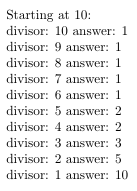

This how-to article describes how you can create a LaTeX command to pad a PDF with blank pages so that the total number of pages is an integer multiple (to satisify a printer's request).
Does your printer want the number of pages in your PDFs to be an integer multiple? Mine does. The number of pages in my documents must be a multiple of four. That isn't exactly a signature, but that's the first word that comes to mind. Of course this is easy to do by hand when you have Adobe Acrobat or a similar tool, but this short article shows how to create and use a LaTeX command that will do it for you automatically.
This example depends on the ifthen, calc, and pageslts packages.
ifthenprovides theifthenelseandwhiledocommands.calcenables us to do infix math to easily set a counter.pagesltsprovides the counterCurrentPage.
As usual with TeX and LaTeX there are multiple ways to solve this problem; this is just one. Other packages that are helpful in this situation but not used in this article are :
What is a real signature? It is group of pages printed on a large sheet in such a way that you can fold and cut to the finished page size. This article from Designers Insights describes in detail what signature means in the print world.
What this article is about is not exactly creating a signature; we will create a LaTeX command to pad a PDF with blank pages until the total number of pages is a multiple of four. Usually the printer will set up the signature, but some, like mine, prefer that the number of pages is an integer multiple of the final signature.
The Modulo Function
Given the problem, it's pretty clear we're going to need a modulo function and LaTeX doesn't come with one built in. We can program it since
$$ a\mod n = a - n\times(a//n) $$
where the $//$ is the integer division operator. When TeX does division on integers, the fractional part is discarded, which is a form of integer division (truncated division). Here is a little example you might like to play with:
\documentclass{article}
\usepackage{calc}
\usepackage{ifthen}
\newcounter{dividend}
\newcounter{divisor}
\newcounter{answer}
\begin{document}
\noindent Starting at 10:
\setcounter{dividend}{10}
\setcounter{divisor}{10}
\whiledo{\thedivisor>0}{
\setcounter{answer}{\thedividend/\thedivisor}
\noindent divisor: \thedivisor\ answer: \theanswer\\
\setcounter{divisor}{\thedivisor - 1}
}
\end{document}

Additionally, this question on tex.stackexchange.com has some useful and interesting answers about calculating modulo with TeX and LaTeX.
The LaTeX Macro padpages
Now for the macro. We'll name it padpages. First, create a new counter, modpage.
Note: If you use the the memoir class, you can take advantage of the command thesheetsequence, which provides the number of the current page; not necessarily the same as the page number that is printed on the page, but the actual number of the page as counted from the beginning of the document. In this example, we'll use the pageslts package to get the same result (theCurrentPage).
For the blank pages we're going to insert, we don't want headings or page numbers, so set the page style to empty.
\pagenumbering{arabic}
\newcounter{modpage}
\newcommand\padpages{%
\pagestyle{empty}%
Manipulate the modpage counter to be the real page number mod 4. Since
$$ a \mod n = a - n \times(a//n) $$
or,
$$ \text{pagenum} \mod 4 = \text{pagenum} - 4 \times (\text{pagenum}//4) $$
Use the modpage counter to hold the modulo calculation. The calc package enables us to write the arithmetic inside the argument that sets the counter:
\setcounter{modpage}{\theCurrentPage - 4*{\theCurrentPage/4}}
The ifthenelse command takes three arguments. The first one sets the condtion to be tested. If the condition is true, the second argument is executed; if it is false, the third argument is executed. We test to see if our modpage counter is equal to zero. If modpage is zero, we don't need to anything since the page number is already a multiple of 4, so the second argument is simply relax.
\ifthenelse{\themodpage=0}%
{\relax}%
Otherwise, we use our third argument, the one that does the work; we need to add $4 - (\text{pagenum}\mod 4)$ pages. We reuse the counter modpage to now hold the number of pages to add:
{\setcounter{modpage}{4 - \themodpage}%
\whiledo{\themodpage>0}{%
\mbox{}\clearpage\mbox{}%
\setcounter{modpage}{\themodpage - 1}%
}% end whiledo
}% end ifthenelse
}% end padpages
The \mbox{}\clearpage\mbox{} forces a blank page to be added. We continue to force these blank pages to be inserted, decrementing the counter each time through the whiledo loop until the counter is zero.
The \padpages macro should come at the very end of the document; depending on what other packages you use, you might find the atveryend package useful.
The Complete Macro
Finally, here is the entire code but a bit more general. Now it takes an argument--the integer for which the total number of pages should be a multiple. For example, your printer might want a multiple of eight instead of four.
\pagenumbering{arabic}
\newcounter{modpage}
\newcommand\padpages[1]{%
\pagestyle{empty}%
\setcounter{modpage}{\theCurrentPage - #1*{\theCurrentPage/#1}}%
\ifthenelse{\themodpage=0}%
{\relax}%
{\setcounter{modpage}{#1 - \themodpage}%
\whiledo{\themodpage>0}{%
\mbox{}\clearpage\mbox{}%
\setcounter{modpage}{\themodpage - 1}%
}% end whiledo
}% end ifthenelse
}% end padpages
Example
For example, say the current number of page is 121 and we need the final number of pages to be a multiple of 4. That is, $p \mod 4 = 1$, which is defined as
$$ \text{pages} \mod 4 = \text{pages} - 4\times(\text{pages}//4) $$
or, substituting ($121//4=30$):
$$ 121 - 4\times(121//4) = 121-4*30 = 1 $$
With 1 as the remainder (that is, 1 is the solution to the modulo operation), we now use it to calculate the number of pages to add.
In the setcounter just before the whiledo loop begins, we subtract the remainder from the initial integer multiple: $4-1=3$. We add three blank pages to the document so it goes from 121 pages to 124 pages, a multiple of 4.